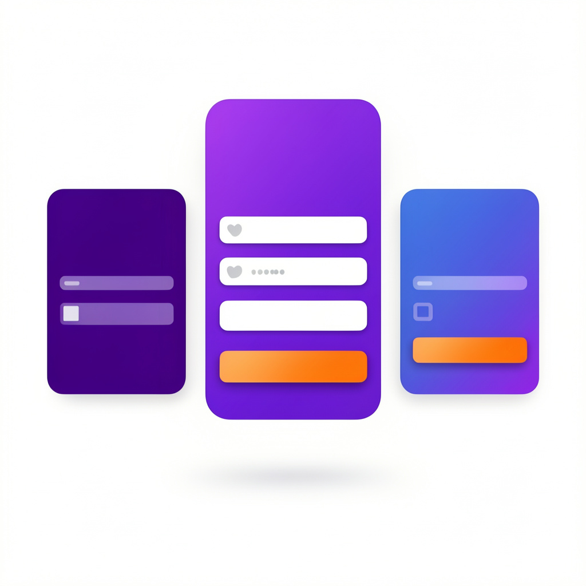

PAINEL DE CONTROLE
launch
Página de Login 1
launch
Página de Login 2
launch
Página de Login 3
music_note
Música Lofi
Terminal de Login 01
open_in_new
Acessar
code
Editar
Terminal de Login 02
open_in_new
Acessar
code
Editar
Terminal de Login 03
open_in_new
Acessar
code
Editar
Estação de Mídia